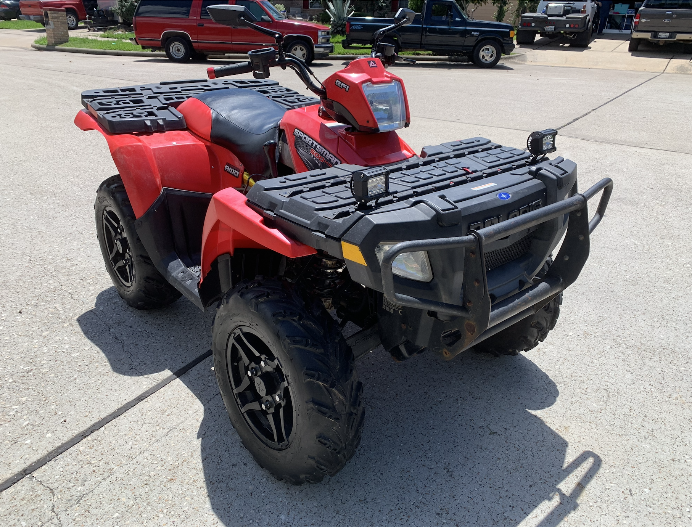
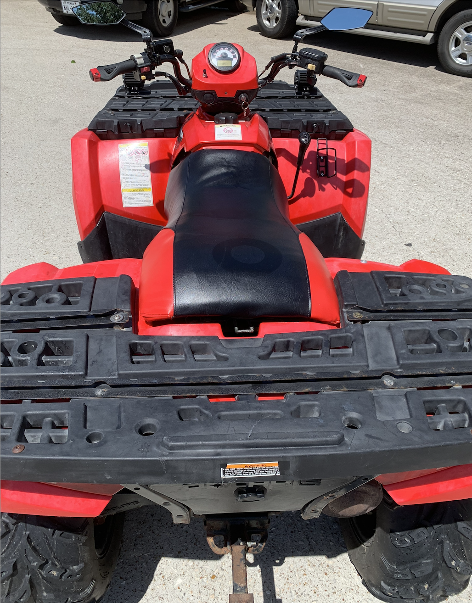
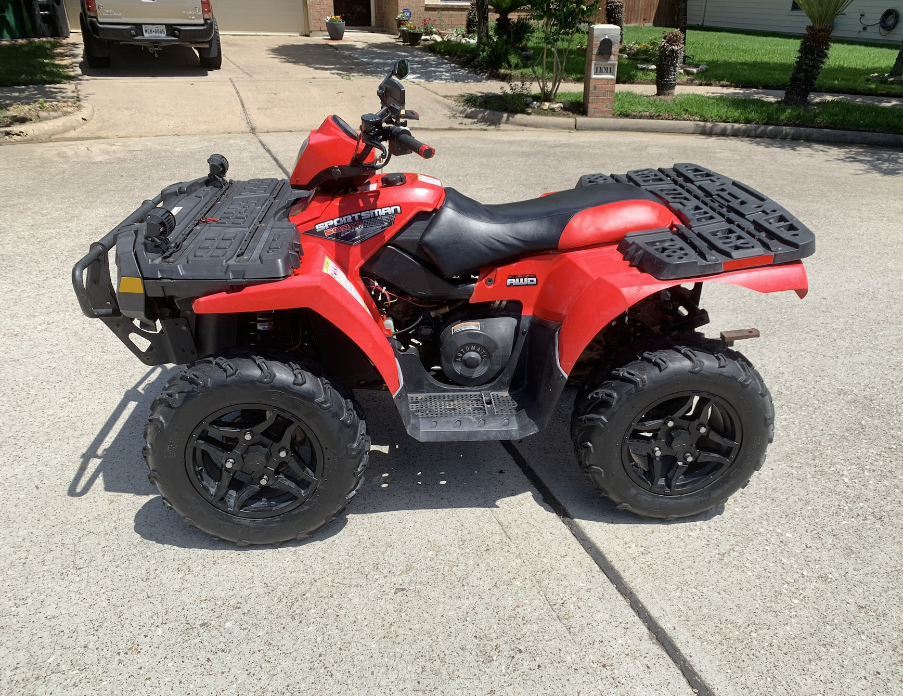
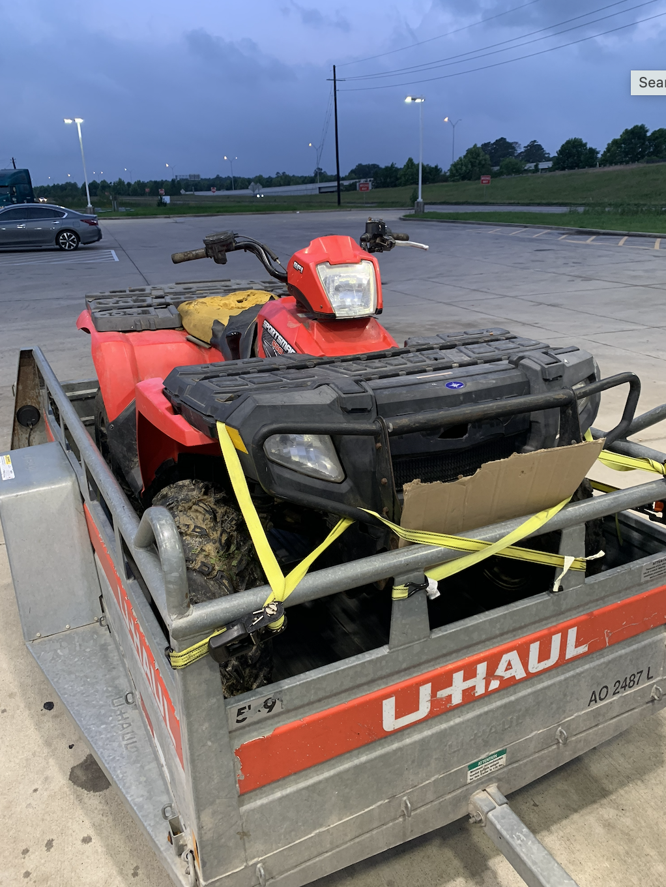
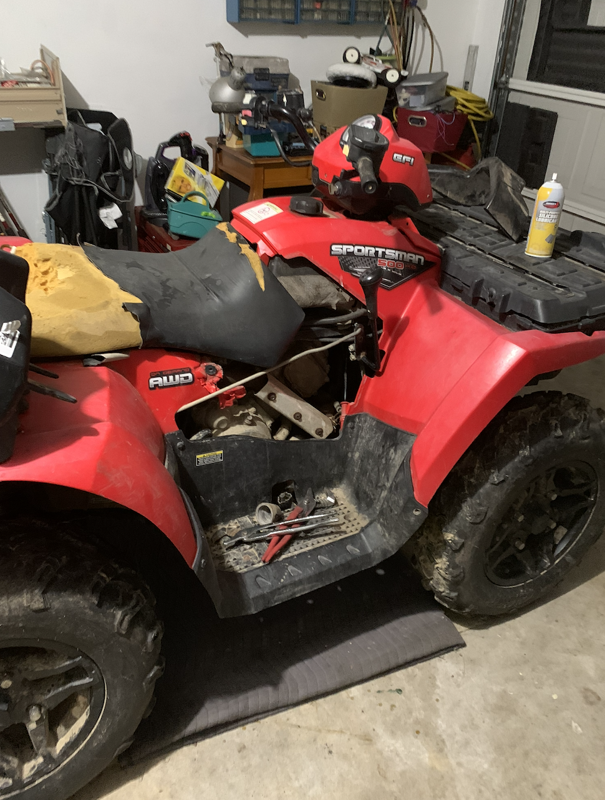
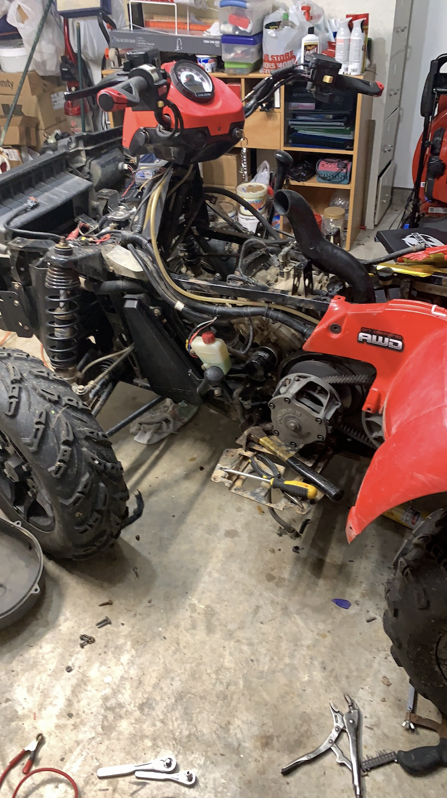
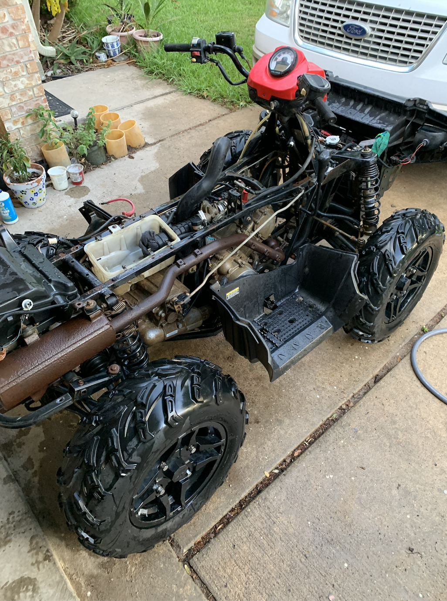
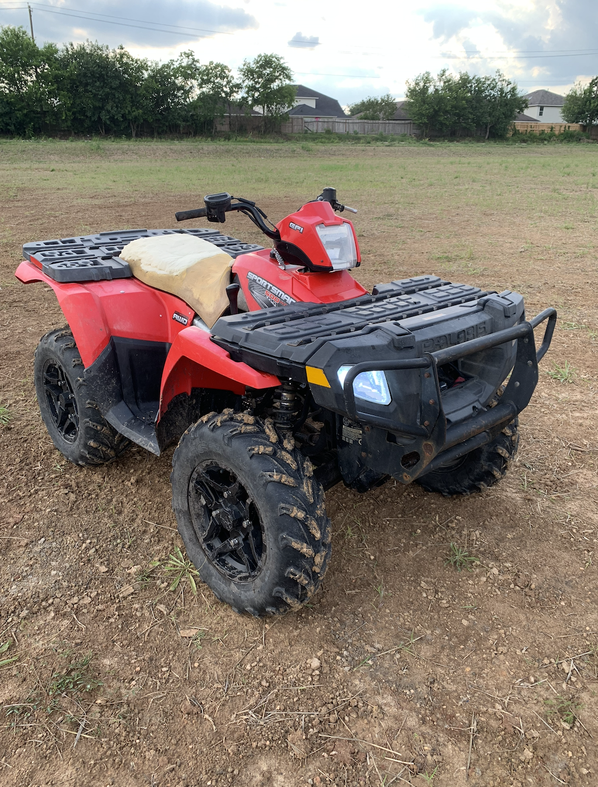

A home restoration of a Facebook Marketplace ATV completed in high school



Purchased from Facebook Marketplace for $1,500, this Polaris Sportsman 500 was restored to working condition. Over the course of a summer, the ATV was stripped down to the chassis, with many key systems overhauled.
The proceeds of this project went to purchasing my college laptop, which I used to craft this website!

On the trailer right after purchase — rented a U-Haul to pick it up

Resting in the garage the night it was purchased — seat in shambles, fuel tank sitting on the rear rack

Front suspension exposed, gas tank removed to replace the fuel pump, fuel injector, and other engine components

Stripped down to the bones — removing the plastics gave easy access to all components, and a thorough wash removed all debris
Listed and sold for $3,400 on the same day!

Out on the trail